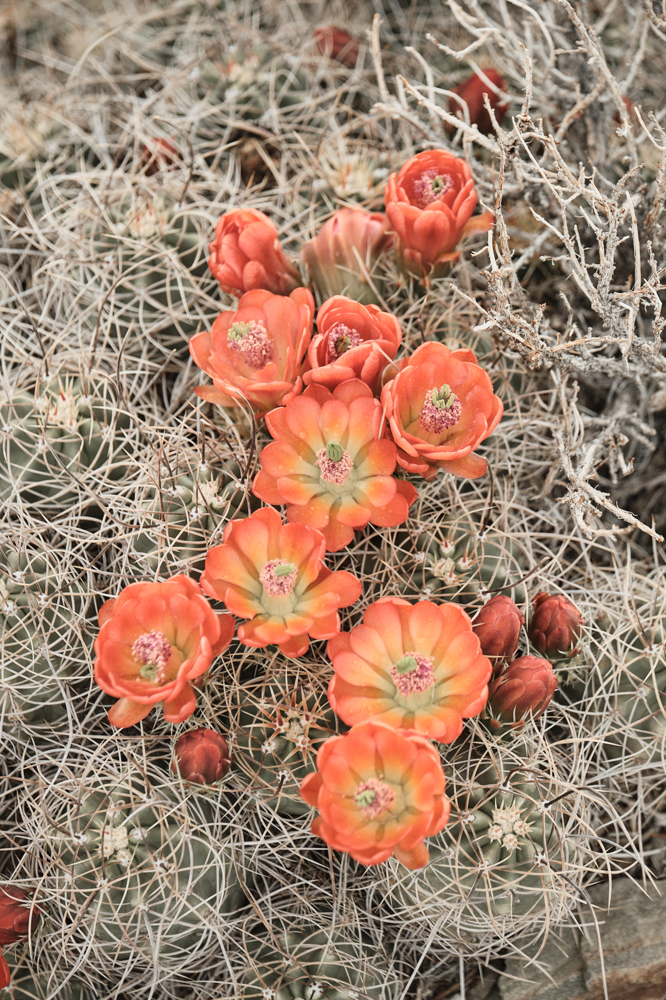
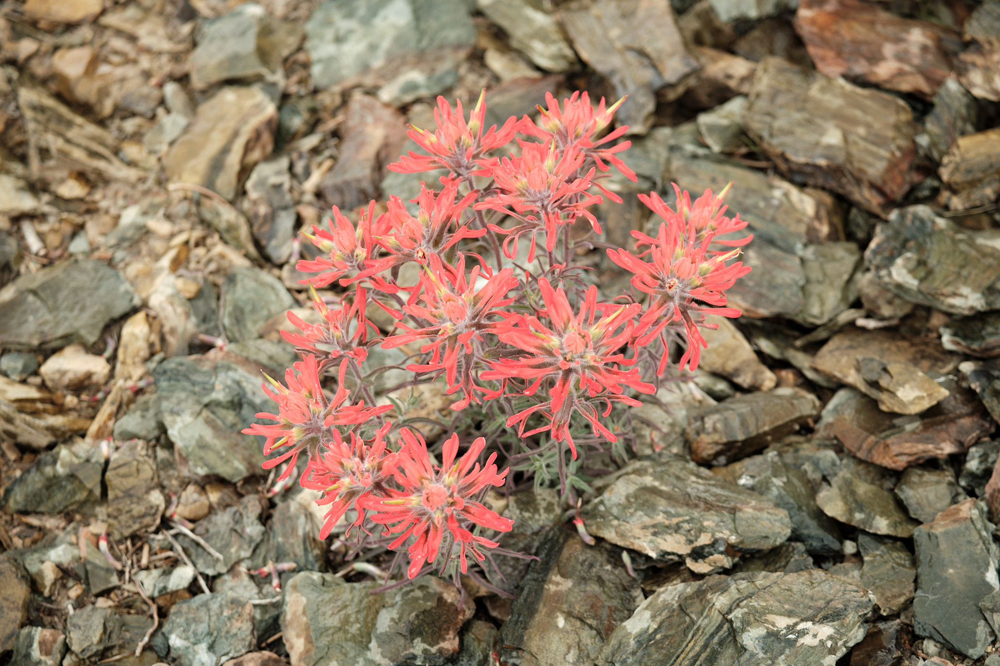

The Eastern Sierras have long captivated me. Growing up along the California coast, for many years my trips to the Sierras were in the western range out of sheer practicality. Getting to the Eastern Sierras is a commitment, especially in winter when the high passes close. But what awaits is a stunning landscape, far more rugged and, to my eyes, dramatic than the Western half. This is truly a geologic wonderland, with both the highest peak in the continental united states, less than 50 miles from one of the lowest places on the planet in Death Valley. And the scenery in between is filled with jagged peaks, strong rivers, incredible boulders, and the oldest living trees on the planet.
One of the most popular places in the Eastern Sierras are the Alabama Hills (named for the CSS Alabama, a Confederate warship deployed during the American Civil War that captured the imagination of the miners working here at the time).
- 
- 
Details of the Eastern Sierras